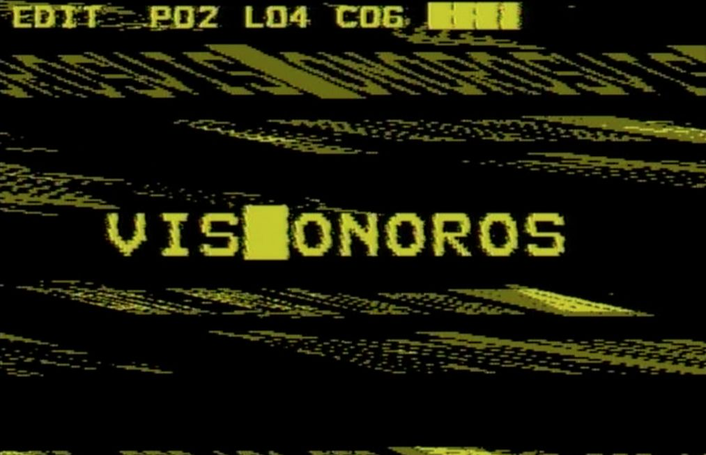
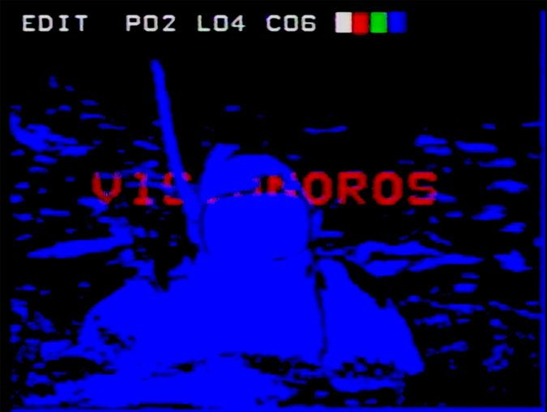
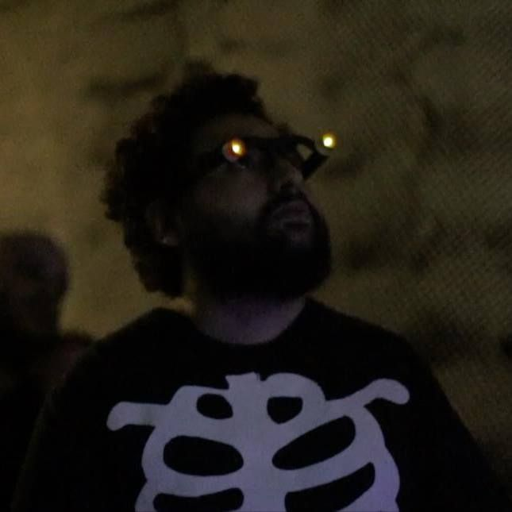
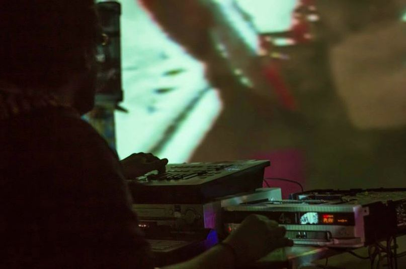
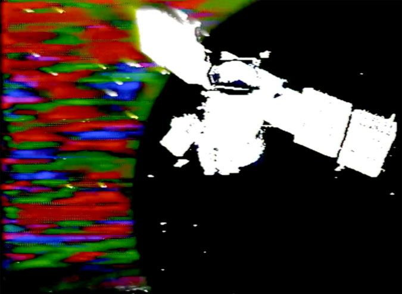
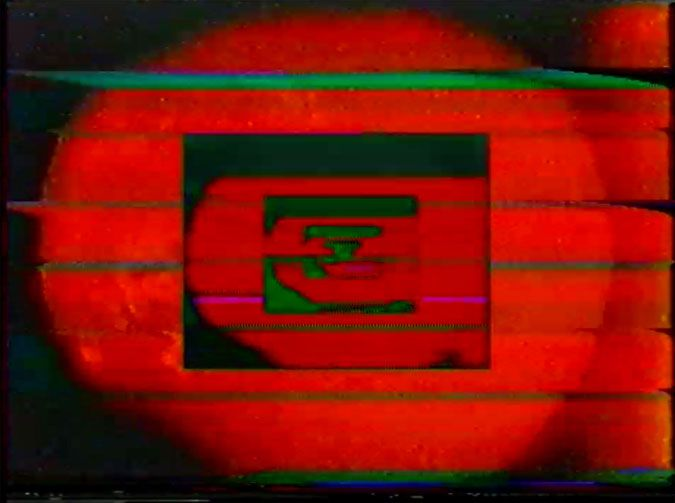
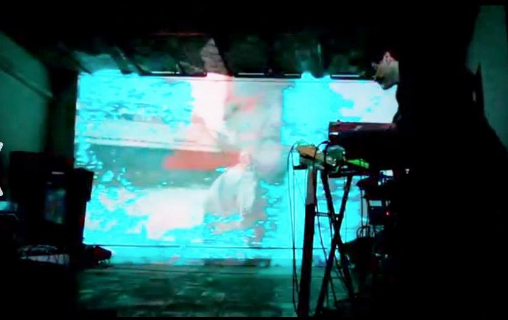

Visionoros Collective

Visionoros is a shifting collective that designs audiovisual performances to defragment images and augment sound perceptions based on the experimentation/improvisation with analog-digital technologies. We are interested in is the hidden life of images and sounds.
An essential part of the project is the inclusion of local artists or those willing to experiment collectively on mutable pieces and assemblies.
Performance / VHS / Electronic Music
Custom made guitars, homemade wooden projectors, VHS feedback, live-coding.






Visionoros Cosmic Ed. (2016)
Mario Guzman, Agustín Ramos Anzorena
Performance / Soundscapes / VHS feedback / Analog Visuals VHS feedback, Found footage, original music Length 30 min
▶ Visionoros Cosmic Ed., video
Exhibitions
- Latin American Narrative and Visual Experimentation. Floating Projects Gallery, May 4th, Hong Kong, 2019.
- ZERO1. Quinzaine Digitale. Maison Henri II, La Rochelle, France, 2017.
- Poextrónica: Past and Future of Digital Literature. Zona Futuro, 43rd International Book Fair. La Rural, Buenos Aires, Argentina, 2016.
- Espacio Nixso. Buenos Aires, Argentina, 2015.
- Casa Dasein. Buenos Aires, 2015.
- Eye Reverse. Arkhé Collective. Matienzo Cultural Center, Buenos Aires, Argentina, 2015.
- Cries in the Depths. Transterritorial Underground Film Festival. Una Casa, Buenos Aires, Argentina, 2014.
- Sideral Party. Kasa Las Estrellas. Buenos Aires, Argentina, 2014.
- Visionoros Vol. 1. VideoClub Boedo, Buenos Aires, Argentina, 2013.
Credits, Visionoros Cosmic Ed.
- VHS feedback Mario Guzman
- Homemade projector Mariana Lombard
- Live animations Celestial Brizuela
- Live coding music Leandro Yako
- Soundscapes Agustín Ramos Anzorena
- Live Music Santi Lesca
- Voice Rochi Gallardo
- Custom guitar Leonardo Salzano